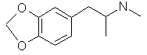
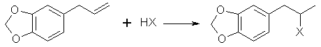

[Previous Chapter] [Index] [Next Chapter]
Chapter 8 - Ecstacy and Eve
|
Ecstacy is one of the most interesting drugs to ever be discovered. It is most closely compared to psychedelic drugs in its general effects,
but where there are many drugs that can reproduce the effects of the famed LSD, there is yet no substitution for ecstacy. A couple have come
close, MDEA (Eve, N-ethyl-3,4-methylenedioxyphenylisopropylamine) and persons may find no significant difference and enjoy the lessened
physical aspects.
Other books describe in detail the ecstacy experience so I refer you to them if it is unfamiliar. Ecstasy: The MDMA Story by Bruce Eisner has one of the best breakdowns of the "stages" of the experience as well as an in-depth look at its flip-flop legal status. E for Ecstasy by Nicholas Saunders covers the British perspective with thir largely "rave culture" use as well as the legal therapeutic use in Switzerland. Both give practical considerations for ecstacy's use. PiHKAL - A Chemical Love Story by Ann and Alexander Shulgin give comments at various dosages for ecstacy and 178 other psychedelic amphetamines as well as their synthesis. We now turn our attention to the synthesis for ecstacy of which there are several choices. A simple modification in most of these will yield Eve (100-200 mg/dose, 3-5 hour duration).  MDMA, 3,4-Methylenedioxymethamphetamine, ecstacy, N-methyl-3,4-methylene- dioxyphenylisopropylamine, N,alpha-dimethyl-1,3-benzodioxole-5-ethanamine. CAS No: [42542-10-9] Dosage: 80-150 mg Duration: 4-6 hours N-Alkylation of MDAMDA can be used to synthesize MDMA simply by adding a methyl group. Two of the general methods for doing this are covered below. The one utilizing methyl sulfate is only referred to due to methyl sulfate's nasty properties.The Method of Decker and Becker[53]179 g (1 mole) of MDA as the free base and 106 g (1 mole) of benzaldehyde are dissolved in 95% ethanol (as much it takes to dissolve them). This solution is refluxed for 30 minutes forming the Shiff base (imine) intermediate of these two compounds. The ethanol is removed by distilling under reduced pressure leaving an oil.This oil is added to 142 g (1 mole) of methyl iodide and placed in a pipe "bomb". Use a pipe with fine threads and wrap these with teflon tape to form a good seal. Tighten down the caps well and place the pipe "bomb" in boiling water for five hours. The material in the "bomb" is then washed out with a solution of 80ml methanol and 10 ml water and placed in a boiling flask to be refluxed. Only enough solution to rinse out the pipe is required. Reflux the mixture for 30 minutes. Add an equal volume of water and reflux the mixture until the odor of benzaldehyde has disappeared. Acidify the mixture with hydrochloric acid (shake well) and the extract with three portions of ether. The solution is made basic with 25% NaOH solution and the liberated amine is extracted with ether (or methylene chloride etc.). The ether is washed with water, dried with MgSO4 and HCl gas is run into the solution to precipitate the amine. Filter and allow to dry. The MDMA may contain some MDA but this should be acceptable. Replacing methyl iodide with 156g (1 mole) ethyl iodide and boiling the pipe for 10-15 hours will give Eve. Methyl Sulfate MethylationKiefer[54] describes the use of methyl sulfate to methylate substituted phenethylamines. Be cautioned that methyl sulfate (dimethyl sulfate) causes severe damage to tissue it comes in contact with and lethal poisoning is possible. Wear gloves and wash after handling this material. The reader is referred to cited journal article for the details.Reduction of the Formamide of MDAThe formamide used here can be obtained from the reaction mixture of the Ritter Reaction for MDA by extracting with ether (or toluene etc.) the oil formed after the addition of NaOH solution.A solution of 7.7 grams of the formamide in 25 ml anhydrous THF (Tetrahydrofuran) is added with stirring (magnetic) to a solution of 7.4 g LAH in 600ml anhydrous THF under inert atmosphere. See under safrole synthesis in chapter 5 for inert atmosphere apparatus. The reaction mixture is brought to reflux and held there for 4 days. The solution is then cooled to room temperature and 7.4 ml water in 7.4 ml THF are added to the solution followed by 7.4 ml 15% NaOH and 22 ml water. The solids are filtered out and washed with THF. The filtrate is removed of solvent and the residue dissolved in 200ml of methylene chloride. The methylene chloride solution is then extracted with three 100ml portions of dilite HCl. These extracts are made basic with 25% NaOH solution and the oil released is extracted with methylene chloride. The methylene chloride is distilled off and the MDMA remaining is distilled under reduced pressure. The distilled oil is dissolved in ether (or toluene etc.) and HCl gas is run in to precipitate the MDMA. Filter and allow to dry. Similar reduction of the acetamide formed by using acetonitrile in the Ritter Reaction will give Eve. Reductive Amination This general method utilizes piperonyl acetone and methylamine hydrochloride as the starting materials. These two compounds react in an
equilibrium to form an imine. The imine is then reduced to MDMA. Two methods of reducing the imine are given. This is analogous to the
methods used for MDA.
This general method utilizes piperonyl acetone and methylamine hydrochloride as the starting materials. These two compounds react in an
equilibrium to form an imine. The imine is then reduced to MDMA. Two methods of reducing the imine are given. This is analogous to the
methods used for MDA.
Sodium Borohydride Reduction[55]In the following reaction, 10 times the theoretical amount of methylamine hydrochloride is used to push the equilibrium of the reaction to the right in the formation of the intermediate imine compound. When the imine is formed it is reduced by the hydride to the amine, MDMA.To a solution of 26 grams of methylamine hydrochloride in 110 ml of methanol are added 6.6 grams of piperonylacetone (0.037 mole) and then 3g of sodium cyanoborohydride. The mixture is stirred at ambient temperature, and 12 N HCl is added with a dropper or pipet as required to maintain the pH at neutrality (pH 7 as determined by universal pH paper; 31.5% muriatic acid will suffice even though it is less concentrated). The reaction is complete after 36 hours following the addition of 1L of water containing 5ml of 12N HCl (6 ml of muriatic acid). The reaction mixture is extracted twice with 150 ml of methylene chloride (discard these extractions). The reaction is made basic with 25% NaOH solution (red litmus turns blue), and extracted with three 150ml portions of methylene chloride. The extracts are pooled together and the methylene chloride is distilled out. The oil that remains is distilled at reduced pressure (0.2 mmHg; bp 85-95°C) and the recovered oil is dissolved in 60 ml of isopropyl alcohol (100%) and acidified with 12N HCl (blue litmus turns red). An equal volume of ether is added and the crystals should spontaneously form. They are filtered out, washed with a 50/50 isopropyl alcohol/ether solution and then ether alone. The author of this article cited likes this final method for crystallization. This is not necessary. After distillation of the oil, dissolve the oil in ether (or toluene or methylene chloride) and pass HCl gas into the solution until no more crystals form. Filter out the crystals and let dry. Aluminum Amalgam Reduction[56]72.5 grams of aluminum foil is cut into one inch squares and placed in a 3000ml erlenmeyer flask or other suitable glass container. A solution of 1.8g of mercury chloride (HgCl2, mercuric chloride) in 2530ml (2.53 L) if water is added, and the mixture is stirred occasionally over 30 minutes or until there is evolution of fine bubbles, the formation of a light grey precipitate, and the occasional appearance of silvery spots on the surface of the aluminum. This amalgamates the aluminum. The solution is poured off and the foil is washed with four 1000ml portions of water.To the amalgam is added, in sequence, 101 grams of methylamine hydrochloride in 101 ml of water, 302 ml of isopropyl alcohol (100%), 244ml of 25% sodium hydroxide solution, 89g (0.5 moles) of piperonylacetone and then 588 ml of isopropyl alcohol. The mixture is swirled occasionally for 2 hours and kept below 60°C by cooling with an ice water bath as necessary. When the temperature no longer rises, sit on the benchtop and allow to cool to room temperature. If 40% methylamine in water is used the following substitutions can be made. In sequence add 128g aqueous methylamine, 302 ml isopropyl alcohol (100%), a suspension of 84g NaCl (table salt) in 42 ml 25% NaOH that has been diluted to 235 ml with water, 89g (0.5 moles) of piperonylacetone, and finally 588ml isopropyl alcohol (100%). The mixture is then filtered through Celite (a diatomaceous silicate powder which is placed in a layer over the filter paper before filtering, it is sold by chemical companies as Celite) and the filter cake is washed thoroughly with methanol. Compine the liquid filtrates and distill off the methanol (65°C) the isopropyl alcohol (82°C) and the water (100°C). Dissolve the oil in 200 ml of ether and extract the MDMA into two 500 ml portions of 3N HCl. The acid solution is washed with three portions of methylene chloride equal in volume to the acid solution (you will probably have to wash portions of the solution at a time unless you have a huge separatory funnel. The acid solution is basified with excess 25% sodium hydroxide solution (red litmus turns blue) and the liberated oil is extracted into three 500 ml portions of methylene chloride The methylene chloride solution is dried with magnesium sulfate. The drying agent is filtered out and the methylene chloride distilled out. The residual oil is distilled under reduced pressure and the distilled oil then dissolved in ether (or toluene or methylene chloride). HCl gas is bubbled through the solution until no more precipitate is formed. The precipitate is filtered off and allowed to dry (~70% yield can be expected). To produce Eve, substitute 122g ethylamine hydrochloride for methylamine hydrochloride. Leuckart ReactionMethylamine is substituted in the Leuckart reaction for MDA to produce MDMA[57]. This is elaborated below. Uncle Fester[58] describes generating high purity N-methyl formamide[59] and then carefully reacting this with phenylacetone for highest yield of methamphetamine. Substituting piperonylacetone for phenylacetone would give MDMA. Fester gives long "idiot proof" directions so I refer you to his book for his directions.To a three-necked flask equipped with a dropping funnel, thermometer (into the reaction mixture), and down directed condenser (simple distillation apparatus) is added with 133g (1.72 moles) of 40% methylamine solution and 88g (1.72 moles) of 90% formic acid. The temperature is raised to 160°C by distilling out water, and 59.4 grams (0.334 moles) of piperonylacetone is added at one time. The following apparatus can be substituted for a three-neck flask and the piperonylacetone added by momentarily replacing the thermometer with a funnel. The mixture is maintained at 160-170°C for 7 hours and any ketone which distills over is periodically returned to the flask. The formyl derivative is hydrolyzed in the reaction mixture by refluxing for eight hours with 120 ml of concentrated HCl (145ml 31.5% muriatic acid). The mixture is diluted with 200 ml of water and extracted with benzene (or ether etc.) to remove water insoluble material. The aqueous solution is treated with a little charcoal, Norit (or filtered through activated charcoal from pet stores). The solution is made alkaline with ammonia (or alternatively 25% NaOH) and the oil thus produced is extracted with benzene (or ether etc.). The benzene is washed three times with water and dried with sodium sulfate or other drying agent. A stream of HCl gas is fed through the solution until no more precipitate is formed. The precipitate is filtered out and allowed to dry. 40% methylamine is the commonly available form along with methylamine hydrochloride. Basifying 116g of methylamine hydrochloride with 68.5g of NaOH in 80 ml of water will approximate the 40% solution called for. Slowly add the methylamine hydrochloride to the NaOH solution after it cools. Keep the solution cool to maximize the solubility of the methylamine. Substituting ethylamine will give Eve. HaloSafrole Method This method is identical to the halosafrole method used for MDA with the exception that methylamine (or ethylamine) is substituted for ammonia.49 g (0.2 moles) of bromosafrole are added to methanol containing 62g (2 moles) of methylamine (155g of 40% methylamine in water can be used. The bromosafrole and methylamine layers are joined by adding the minimum amount of methanol that brings both layers into solution). This is placed in an adequate size pipe "bomb". This pipe "bomb" should be made of stainless steel and have fine threads on each end. The threads can be wrapped with teflon tape to ensure a good seal. Tighten the pipe ends securely and place the pipe bomb in cooking oil and heat at 130°C for 3-4 hours. The temperature is monitored by a candy thermometer placed ino the oil. When the pipe cool, pour the solution into the boiling flask of a simple distillation apparatus and remove the excess methanol and ammonia through distillation. Acidify the residue with hydrochloric acid (muriatic acid) with shaking until a pH of 3 is reached. Extract the solution with ether (or toluene or methylene chloride etc.) to remove unreacted bromosafrole. Basify the aqueous solution with 25% NaOH solution and extract the oil released with ether (or toluene etc.). Place the ether extract in a vacuum distillation apparatus and remove the ether. Apply a vacuum and distil over the MDMA. Dissolve the distilled oil into toluene and run in a stream of HCl gas to precipitate the MDMA. Filter and allow to dry. The solvent from the bromosafrole extract can be removed and the recovered bromosafrole reused. For Eve use 90g (2 moles) of ethylamine in methanol. 40 g of chlorosafrole or 58g of iodosafrole can be substituted for bromosafrole. Extend the heating for 6-8 hours when substituting chlorosafrole. |
[Previous Chapter] [Index] [Next Chapter]